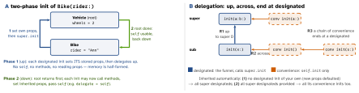

swift · folio
In one line: An initializer must give every stored property a value before the instance
is used. Structs get a free memberwise init; classes split init into
designated (initialise own properties, delegate up to super) and
convenience (delegate across to self.init), and run
two-phase initialization: phase 1 fills memory bottom-up, phase 2 customises top-down.
Download PDF Print view LaTeX source


How it works
- Memberwise init (structs only): synthesized if the main declaration has no init.
varprops with a default become defaulted params (SE-0242, Swift 5.1); aletwith a default is excluded. Access:internalat most,privateif any stored prop is. Custom init in an extension keeps it. Struct inits delegate withself.init, noconveniencekeyword. - Four safety checks (TSPL): (1) designated sets all own props before delegating up; (2) designated delegates up before assigning an inherited prop; (3) convenience delegates before assigning anything; (4) no methods, no prop reads, no
selfas a value until phase 1 ends. - Overriding a super designated init:
override init. Arequiredinit must exist in every subclass (writtenrequired, notoverride); satisfied by inheritance too. Protocolinitrequirements forcerequiredunless the class isfinal. - Failable
init?(returnsnil) /init!(IUO result). Classes mayreturn nilanywhere, even before all props are set (Swift 2.2+). A failable may delegate to a non-failable; a non-failable override may replace a failable one, never the reverse.init() throwswhen the caller needs why. letprops: assigned exactly once per path during init.- Observers
willSet/didSetdo not fire for assignments in the class’s own init (nor for defaults); they do fire when a subclass sets an inherited prop in its phase 2. lazy var: computed on first access, may useself; not thread-safe (two threads can both run it); on a struct the first access mutates, so it needs avarinstance.deinit: classes (and~Copyablestructs/enums, Swift 5.9). Runs subclass-first, super’s deinit is called automatically; never call it yourself.
Remember
“Designated up, convenience across. Phase 1 fills (bottom-up), phase 2 uses
(top-down). Own props before super.”
Example — phase 1 protects an override
class Vehicle {
let wheels: Int
init(wheels: Int) { self.wheels = wheels; setup() } // designated
convenience init() { self.init(wheels: 4) } // across
func setup() {}
}
final class Bike: Vehicle {
var rider: String // no default
init(rider: String) {
self.rider = rider // phase 1: own props FIRST
super.init(wheels: 2) // then up
print(wheels) // phase 2: self usable
}
override func setup() { print(rider) } // runs INSIDE super.init
}
// Bike() is an error: Bike has its own designated init,
// so Vehicle's convenience init() is not inherited.Traps
- UIKit subclass with
init(viewModel:)stops inheritance → you must writerequired init?(coder:)(usuallyfatalError/@available(*, unavailable)). self.method()beforesuper.init— compile error (check 4). Assign own props, callsuper.init, then configure.- Setup in
didSet“does nothing” ininit— observers skip the own init. Call the setup explicitly. public structin a package: the memberwise init is internal — clients cannot call it; write apublic init.- Adding one init to a struct body silently deletes the memberwise init for every caller.
- Convenience init cannot call
super.init— onlyself.init. - A super init calling an overridable method = a subclass sees phase-1 state; keep init bodies side-effect-light.